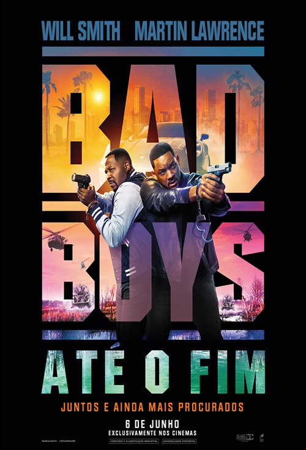

.jpeg)


Aqui vocẽ encontra uma seleção dos melhores filmes de todos os tempos. Aproveite para conhecer explorar os títulos que marcaram gerações, com suas histórias envolventes e atuações memoráveis.
| Filme | Imagem | Sinopse |
|---|---|---|
| Avatar | |
Jake Sully (Sam Worthington) ficou paraplégico após um combate na Terra. Ele é selecionado para participar do programa Avatar em substituição ao seu irmão gêmeo, falecido. Jake viaja a Pandora, uma lua extraterrestre, onde encontra diversas e estranhas formas de vida. |
| É assim que acaba | É Assim Que Acaba, longa do diretor Justin Baldoni, é uma adaptação cinematográfica do livro de mesmo nome da autora Collen Hoover. Na trama, Lily Bloom (Blake Lively) é uma mulher que, após vivenciar eventos traumáticos na infância, decide começar uma vida nova em Boston e tentar abrir o próprio negócio. Como consequência dessa mudança de vida, Lily acredita que encontrou o amor verdadeiro em Ryle (Justin Baldoni), um charmoso neurocirurgião. No entanto, à medida que o relacionamento se torna cada vez mais sério, também surgem lembranças de como era o relacionamento de seus pais. Até que, repentinamente, Atlas Corrigan (Brandon Sklenar), seu primeiro amor e uma ligação com o passado - uma alma gêmea, talvez? - retorna para a vida de Lily. As coisas se complicam ainda mais, quando um incidente doloroso desencadeia um trauma do passado, ameaçando tudo o que Lily construiu com Ryle. Agora, com seu primeiro amor de volta em sua vida, ela precisará decidir se tem o que é preciso para levar o casamento adiante. | |
| Alvin e os esquilos | Alvin, Simon e Theodore são três esquilos especiais, que decidem morar na casa de Dave Seville (Jason Lee), um compositor em busca do sucesso. Logo eles percebem que, para que Dave permita que eles morem em sua casa, o trio precisará demonstrar que tem talento. Assim Alvin, Simon e Theodore mostram que sabem cantar, tornando-se um grande sucesso. Isto faz com que Dave torne-se não apenas seu compositor, mas também um verdadeiro pai. Só que o estrelato sobe à cabeça do trio, gerando problemas no relacionamento deles com Dave. | |
| As branquelas | |
Em As Branquelas, os irmãos Marcus (Marlon Wayans) e Kevin Copeland (Shawn Wayans) são detetives do FBI que estão com problemas no trabalho. A última investigação da dupla foi um grande fracasso e eles estão sob a ameaça de serem demitidos. Quando um plano para sequestrar as mimadas irmãs Brittany (Maitland Ward) e Tiffany Wilson (Anne Dudek) é descoberto, o caso é entregue aos principais rivais dos irmãos Copeland, os agentes Vincent Gomez (Eddie Velez) e Jack Harper (Lochlyn Munro). Para aumentar ainda mais a humilhação da dupla, eles são escalados para escoltar as jovens mimadas do aeroporto até o local de um evento pelo qual elas esperaram por meses. Porém no trajeto um acidente de carro provoca um verdadeiro desastre: enquanto uma das irmãs arranha o nariz, a outra corta o lábio. Desesperadas, elas se recusam a ir ao evento. É quando,para salvar o emprego, Marcus e Kevin decidem por assumir as identidades das irmãs. |
| Bad Boys |  | |
| Cruella | |
|
| Gente grande | |
|
| Gente grande 2 | |
|
| Harry potter | |
|
| Homem de ferro | |
|
| Mega tubarão | |
|
| Monstros S.A | |
|
| Para todos os garotos que ja amei | |
|
| Se beber nao case | |
|
| Simplismente acontece | ||
| Titanic | |